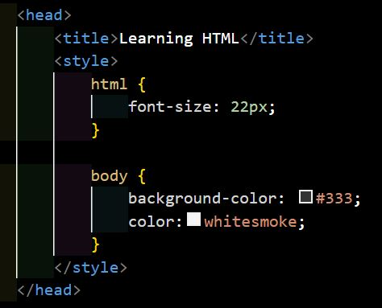
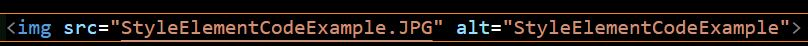

All HTML code starts with less than on the left and greather than symbol on the right.
Each section of code is divided up into elements.
The elements have a start and end section.
The start and end elements have the same names (example: head and head).
The start section of the elements has the less than and greater than symbols. (< >)
The end section has a slash / symbol just after the less than sign.
The first element will require: !DOCTYPE html This is required above the html element.
The second element is html. All code goes between the html start and end element.
You should include the language attribute (example: html lang="en") in your html element that matches the language the website is written in.
The next section is head. Head statnds for headder and goes at the top of the page.
Inside head it will need the meta element (meta charset="UTF-8")
The next section is the body section. This section has most of the information that will appear on the website.
Inside the body you can have a section header starting with h1-h6.
The element p is used for Paragraph and is used for Paragraph string text.
vscode-icons is an extention in Visual Studio Code that allows you to use certain icons in Visual Studio Code.
If you search for github theme you will find the extetnion for GitHub Theme for an improved Visual Studio Code appearance.
Live Server is another extention but this one is usually needed for viewing webpages.
Once the Live Server extention is installed you can right click and choose Open with Live Server to open in a webpage.
The style element allows you to change the style of text in the webpage. This element starts after the title and before the body section.
CSS is the look of HTML and the style element is for adding CSS code to the HTML.
font-size: numberpx is used to adjust the font-size (the nuberic size you want for your font to be. Example: 22px).
The brackets with a pointy middle section contain the style elements. example: {font-size numberpx} (number being the font size.)
background-color: is used to change the background color of the webpage.
#333 is an example of a color. It changes the background to a black color.
color: is another example of how you can change the color of part of the background.
whitesmoke is an example of a color that can be used with color: (color: whitesmoke) It changes the color of the text to white.
The semi colon is used to seperate lines of code in CSS (They are not needed for standard html).
CSS code typically goes inside another file seperate from the html code. This file is often named main.css The style tags do not need to be inside the main.css file. You can cut and paste just the code from inside the stype tag into the main.css file. Remove the style element from the html code and add <link rel=“stylesheet” href=“main.css” type=“text/css”>
The code to link the css file goes above the /head end head tag
stylesheet refers to the main.css type.
type=“text/css” refers tot the file type of the main.css file.
In the bottom right of Visual Studio Code there is a Port: 5500 that when clicked on will stop the server. Once clicked there will be a go live button to make the code live again.
To add special characters in HTML, type an ampersand (&) followed by the pound sign (#), followed by the number of the code, and ended with a semicolon (;)
List of special symbols code:
List of special symbols code:To add a hyperlink to a website type a or <a> and </a>
first drag and drop the image into the Explorer section of Visual Studio Code. Then use less than, img, src, equals sign, quotation marks, the file path (note if this path is in the same folder as your current html file then you will just need the file name and type ex. path.jpg and end quotation mark), then alt, equals, quotation mark, file name, end quotation mark and finally a greater than sign.
To add a Fav icon:
<link rel=“icon” href=“FileName.png” type=“image/x-icon”>
rel stands for relate and refers to how does the icon relate to the webpage. icon for instance refer to an icon relationship of course.
href refers to html that stands in part for hypertext and href is a hypertext reference. The file name in the Visual studio code folder will go here.
The type refers to the type of resource is being used. image/x-icon for instance is a type.
Headings have a hierarchy. You typically only start out with 1 h1 on the page. Each page should only have 1 h1.
The numbers above 1 for the headers (h2-h6) are sub sections that there can be multiple of and divide up the page Into multiple sections.
Typcially the higher the header numbers the more specific about a section topic you get (a hierarchy). (The h1 for example is going to be a header for the whole page, h2 would be a category of the page, h3 would be about a topic in the category of the page, h4 would be a point about the topic in the category of the page, h5 would be a note about the point about the topic in the category of the page, and h6 would be a very specific detail about the note about the point about the topic in the category of the page).
You can change the header's look though css and are not stuck with just choosing only between the six heder sytles.
hr stands for horizontial rule. It doesn't have a closing tag just the <hr>. This will add lines accross the page to divide up section of code.
Webpages (html) does not reconize extra space you put at the end fo the Paragraph tags and will format based on where there is text.
br stands for break and refers to a line break <br> as with hr there is no ending tag needed.
Block level elements start each new section of text on a new line (header, br and p are examples of block level characters that add space).
In line level elements don't have the exta space between each section of text. (Some of the below elements like em and strong are examples of in-line elements that can be used in the middle of say a Paragraph tag and don't add space between characters).
em element: <em> (stands for emphasis) allows you to italicize something to stronger emphasis of that word (important note: the italicized characters have emphasis for the sake of websites reconizing the words are more imporant. The correct way to italicize a word would be through css.)
strong element start, <Strong> end, </Strong> makes the text a little bold.
html entities are things not part of the normal text you would still type out. Ampersand & is often part of these entities. Because some symbols are automatically considered part of code you have to use special characters such as Ampersand to type these out. In the: “How to add a special character without it being confused for code:” Section above a link to code for special characters was given. It is also added here below: (note the list is incomplete and there are many others some of which we will go over below.)
List of special symbols code:entities start with Ampersand # then the hashtag symbol # followed by numbers and finally the semicolon ;.
< is used for less than. <
> is used for greater than than. >
© is for the copyright symbol. ©
<abbr title=“abbreviationInformation” > ABBREVIATION </abbr> end is used for adding abbreviations. The start tag has title equals followed by the abbreviation informaiton in quotation marks then greater than followed by the actual abbreviation and closing tag. When you hover over the abbreviation in the LiveServer it will show the abbeviationInformation you typed between the quotation marks. (Hovering over the abbreviation in an actual website may not show anything so don't rely on this for showing any important information when the website is up.)
<address> is used for reconizing a physical address is being used. Whatever search engine you use will reconize that this is an address and change how it behaves.
html comments start with a less than sign, exclamation mark !, <, four dashes --- and ends with a greater than sign >. The note goes in the middle of the dashes (two dashes in). Example: <!--Note to self--> This message can still seen online if someone knows how, (right click and choose inspect) you should therefore only put notes that won't be an issue if someone else online sees it.
3 types of common list: ordered list, unordered list, and description list.
<li> </li> Creates a list tag with the list itmes going between the start and end list tags.
<ol> </ol> stands for ordered list. The start ol goes before the li tag and ends after the last li tag to make the whole list ordered. There is no need for paragraph elements inside the list (A paragraph element will put spaces between each list number). Ordered list are numbered in ascending order (smallest to largest). These list do not have extra space like Paragraph elements do between each other.
<ul> </ul> stands for unordered list. The paragraph element can be left inside an unordered list (the li start elements go before the start p element and the end li goes after the end p element). The result of an unordered list is a list of bullet points that does have the extra space if you have paragraph elements inside the list.
<dl> </dl> stands for description list. There are two different kinds of elements in a description list and instead of just li like in ordered and unordered list. <dt> </dt> stands for description term and refers to the a list item description. <dd> </dd> stands for description detail and goes below the dt. The dd is where the information about the list item in the dt is entered (like a definition of a word goes in the dd and the word in the dt.) The description detail is indented to the right slightly more than the description term.
Example:
<dl>
<dt>dl</dt>
<dd>dl stands for description list.</dd>
<dt>dt</dt>
<dd>dt stands for description term.</dd>
<dt>dd</dt>
<dd>dd stands for description detail.</dd>
</dl>
This section is not refering to the link tag.
This section is about linking web pages to each other.
<a href=“FullWebsiteAddress.com”> HyplerlinkTextForWebsiteViewerToClick</a> is used for establishing website links.
a is for the anchor tag. First you have the less than sign. After that you have a in the start tag. Then you have href= and the full wesite address (url) in quotation marks. Then the greater than sign. This is followed by the hyperlink text for the viewers of the website to click on and be taken to the website. After that is the closing anchor tag </a>.
When the full web address is included to take you to a specific web address it is called an absolute reference.
You can leave off the folder path if in the same folder as the file with the code (index.html) file (If you drag and drop the file into visual studio it will be stored in the same folder).
If you reference a file only by name (because for instance it is in the same folder as the code file) then you are using what is called a relative reference (instead of an absolute reference).
You can reference another page by making a portion of code a relative reference.
To create a relative reference start with the a tag, then href, followed by equals, then the same file name that is saved in the code folder in quotation marks, then the word to click on to take you to the link, and the end a tag (note thaty the starting a tag won't have the greater than sign until after the end quotation mark of the file name. Also, the file name needs the file type like .html for html file types.)
As an example, website.html is the file name for the html code information on How to upload HTML code to a website and is linked below in this documents so you can click on the How to upload HTML code to a website (Github Pages) words below and it will take you to that document.
How to upload HTML code to a website (GitHub Pages) linkAn about.html page is common as a way of introducing the website author.
An internal reference allows you to link to somewhere else on the same page.
To add an internal reference we use the <Section id=“SectionTitle”> </Section> with the SectionTitle being replaced with the title you want to reference later in the code as a reference and the section content you want between the start and end section elements.
To then reference the internal link you use the nav element ( <nav> <ul> <li> <a href=“#SectionTitle”> TextForUserToClick </a> </li> </ul> </nav>)
nav stands for the navigation element. The unordered list and list item elements help organize the nav link. A hashtag is required in front of the SectionTitle for it to be reconized as a link. SectionTitle is whatever name you put int he section id= element. The TextForUserToClick is the text you want the user to click to take them to the linked section of the page. Since this format is a list you can put back-to-back references using multiple <a href=“#SectionTitle”> TextForUserToClick </a> links.
ctrl s is used for quickly saving code in Visual Studio Code.
The Markup Validation Service will allow us to check our HTML for errors or issues that would have to be resolved prior to uploading online.
HTML quality checkeralt z allows you to wrap words allowing it to extend to the next line below the current line. This will extend text inside quotation marks to the line below it.
When copying text with quotation marks the quotation marks may not be reconized if they are a front or back quote because Visual Stuido Code quotation marks don't have a direction and the quotation marks may be considered by Visual Stuido Code to be a different character.
shift alt down-arrow will copy the above line to directly below it.
Changing the number in the start tag section of a header will automatically change the end tag to the same value as well.
End section:
“Add Links:”
Line:
505
10 Apr 2023